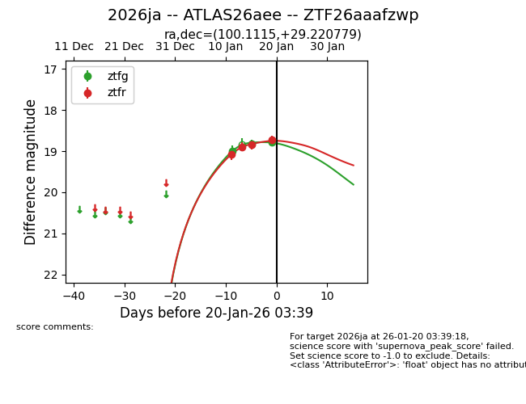
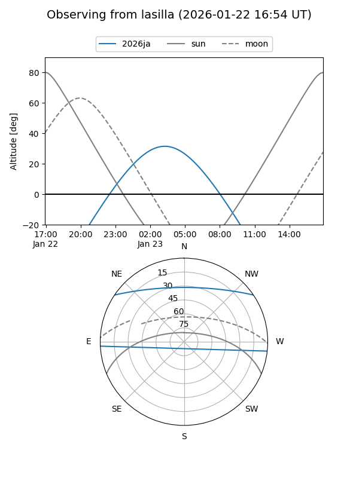
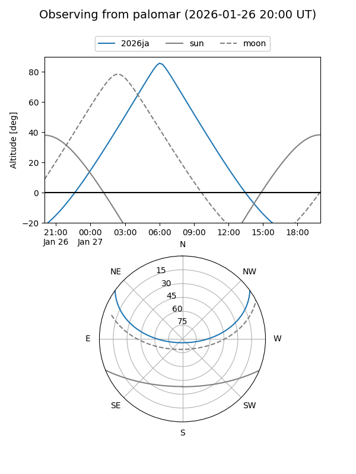
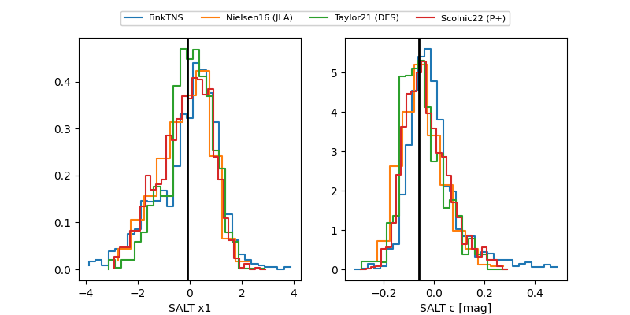

2026ja
Target 2026ja at 2026-01-18 06:50
Aliases and brokers:
FINK: link
Lasair: link
ALeRCE: link
TNS: link
YSE: link
alt names
ZTF26aaafzwp (ztf,fink_ztf)
2026ja (tns,yse)
ATLAS26aee (atlas)
Coordinates:
equatorial (ra, dec) = 100.1115,+29.22078
equatorial (HMS+DMS) = 06:40:26.75,+29:13:14.80
galactic (l, b) = (185.4448,+10.68219)
Flags:
Photometry:
last ztfg=18.83, ztfr=18.85
2 ztfg, 3 ztfr detections
Lightcurve

Visibility


Additional plots
